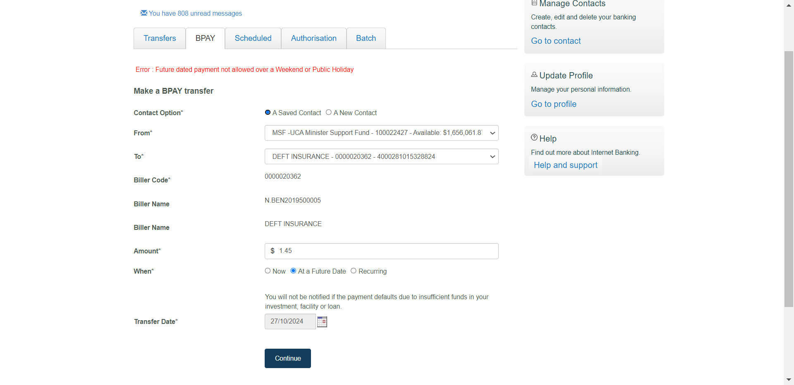
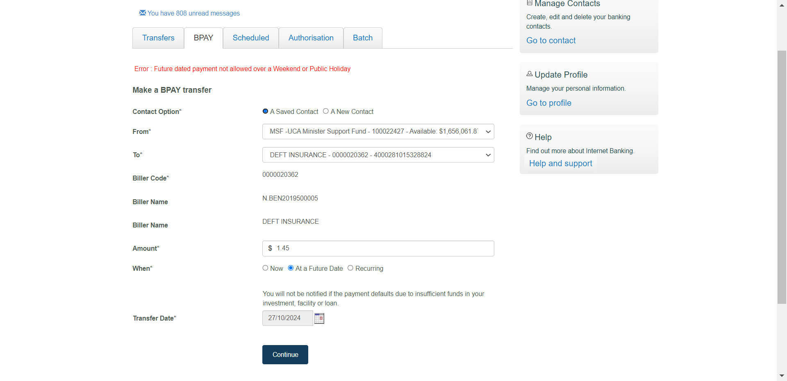
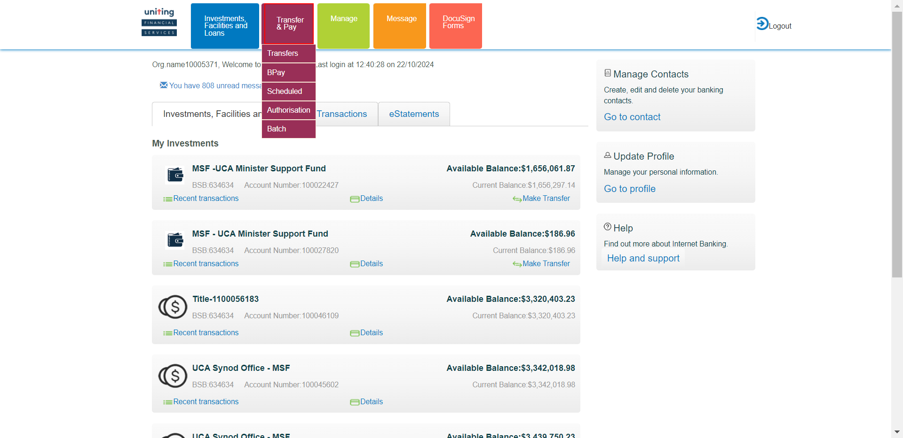
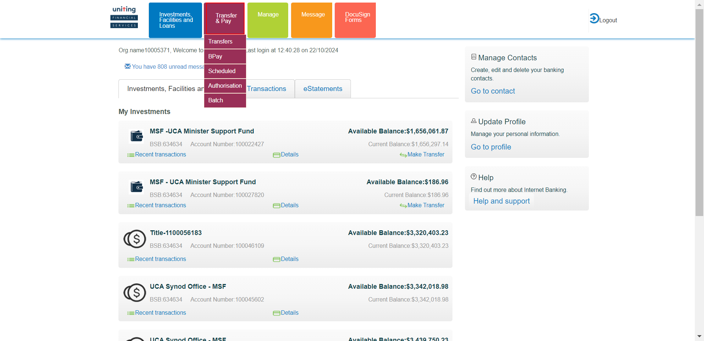

-
IBPayments
07:03:47 AM / 26:42:151 Fail
IBPayments
10.22.2024 07:03:47 10.22.2024 08:00:29 26:42:151 · #test-id=2PassExternal Transfer saved IB futurePassExternal Transfer saved IB futureWhen close all the other opened windows before loading the urlWhen User opens the IB URL Given I login with username "298010" and password "Temenos@123" of IB
Given I login with username "298010" and password "Temenos@123" of IB And click on Go to AccountsAnd click on Transfers and Pay buttonThen click on transfer buttonThen Enter the external future transaction details in IB
And click on Go to AccountsAnd click on Transfers and Pay buttonThen click on transfer buttonThen Enter the external future transaction details in IB And click on continue buttonThen confirm the External transfer future payment
And click on continue buttonThen confirm the External transfer future payment And Review the External transfer future payment
And Review the External transfer future payment Then logout from IbAnd Login to authorizer account with username "
Then logout from IbAnd Login to authorizer account with username ""and password " " And click on Go to AccountsAnd click on Transfers and Pay buttonThen click on Authorization buttonAnd Authorize the External transfer future Then Review authorization that the details of External transfer future is reflected correctly
Then Review authorization that the details of External transfer future is reflected correctly FailBpay future saved contactFailBpay future saved contactWhen close all the other opened windows before loading the urlWhen User opens the IB URL
FailBpay future saved contactFailBpay future saved contactWhen close all the other opened windows before loading the urlWhen User opens the IB URL Given I login with username "298010" and password "Temenos@123" of IB
Given I login with username "298010" and password "Temenos@123" of IB And click on Go to AccountsAnd click on Transfers and Pay buttonThen click on transfer buttonThen Click on BpayThen Enter the Bpay future detailsAnd confirm Bpay saved payment futurecom.frameium.stepdef.Hooks.afterEveryStep(io.cucumber.java.Scenario)And Review the BPAY saved contact futureStep skippedThen logout from IbStep skippedAnd Login to authorizer account with username "
And click on Go to AccountsAnd click on Transfers and Pay buttonThen click on transfer buttonThen Click on BpayThen Enter the Bpay future detailsAnd confirm Bpay saved payment futurecom.frameium.stepdef.Hooks.afterEveryStep(io.cucumber.java.Scenario)And Review the BPAY saved contact futureStep skippedThen logout from IbStep skippedAnd Login to authorizer account with username ""and password " " Step skippedAnd click on Go to AccountsStep skippedAnd click on Transfers and Pay buttonStep skippedThen click on Authorization buttonStep skippedThen Authorize the Bpay transfer futureStep skippedThen Review authorization that the details of BPAY future is reflected correctlyStep skippedFailBpay future saved contactWhen close all the other opened windows before loading the urlWhen User opens the IB URL Given I login with username "298010" and password "Temenos@123" of IB
Given I login with username "298010" and password "Temenos@123" of IB And click on Go to AccountsAnd click on Transfers and Pay buttonThen click on transfer buttonThen Click on BpayThen Enter the Bpay future detailsAnd confirm Bpay saved payment futurecom.frameium.stepdef.Hooks.afterEveryStep(io.cucumber.java.Scenario)
And click on Go to AccountsAnd click on Transfers and Pay buttonThen click on transfer buttonThen Click on BpayThen Enter the Bpay future detailsAnd confirm Bpay saved payment futurecom.frameium.stepdef.Hooks.afterEveryStep(io.cucumber.java.Scenario) And Review the BPAY saved contact futureStep skippedThen logout from IbStep skippedAnd Login to authorizer account with username "
And Review the BPAY saved contact futureStep skippedThen logout from IbStep skippedAnd Login to authorizer account with username ""and password " " Step skippedAnd click on Go to AccountsStep skippedAnd click on Transfers and Pay buttonStep skippedThen click on Authorization buttonStep skippedThen Authorize the Bpay transfer futureStep skippedThen Review authorization that the details of BPAY future is reflected correctlyStep skippedFailBpay future new contactFailBpay future new contactWhen close all the other opened windows before loading the urlWhen User opens the IB URL Given I login with username "298010" and password "Temenos@123" of IB
Given I login with username "298010" and password "Temenos@123" of IB And click on Go to AccountsAnd click on Transfers and Pay buttonThen click on transfer buttonThen Click on Bpaycom.frameium.stepdef.Hooks.afterEveryStep(io.cucumber.java.Scenario)Then Enter the Bpay new contact future detailsStep skippedAnd confirm Bpay new contact future paymentStep skippedAnd Review the BPAY new contact futureStep skippedThen logout from IbStep skippedAnd Login to authorizer account with username "
And click on Go to AccountsAnd click on Transfers and Pay buttonThen click on transfer buttonThen Click on Bpaycom.frameium.stepdef.Hooks.afterEveryStep(io.cucumber.java.Scenario)Then Enter the Bpay new contact future detailsStep skippedAnd confirm Bpay new contact future paymentStep skippedAnd Review the BPAY new contact futureStep skippedThen logout from IbStep skippedAnd Login to authorizer account with username ""and password " " Step skippedAnd click on Go to AccountsStep skippedAnd click on Transfers and Pay buttonStep skippedThen click on Authorization buttonStep skippedThen Authorize the Bpay transfer new contact futureStep skippedThen Review authorization that the details of BPAY future is reflected correctlyStep skippedFailBpay future new contactWhen close all the other opened windows before loading the urlWhen User opens the IB URL Given I login with username "298010" and password "Temenos@123" of IB
Given I login with username "298010" and password "Temenos@123" of IB And click on Go to AccountsAnd click on Transfers and Pay buttonThen click on transfer buttonThen Click on BpayThen Enter the Bpay new contact future detailsAnd confirm Bpay new contact future paymentcom.frameium.stepdef.Hooks.afterEveryStep(io.cucumber.java.Scenario)
And click on Go to AccountsAnd click on Transfers and Pay buttonThen click on transfer buttonThen Click on BpayThen Enter the Bpay new contact future detailsAnd confirm Bpay new contact future paymentcom.frameium.stepdef.Hooks.afterEveryStep(io.cucumber.java.Scenario) And Review the BPAY new contact futureStep skippedThen logout from IbStep skippedAnd Login to authorizer account with username "
And Review the BPAY new contact futureStep skippedThen logout from IbStep skippedAnd Login to authorizer account with username ""and password " " Step skippedAnd click on Go to AccountsStep skippedAnd click on Transfers and Pay buttonStep skippedThen click on Authorization buttonStep skippedThen Authorize the Bpay transfer new contact futureStep skippedThen Review authorization that the details of BPAY future is reflected correctlyStep skippedFailBatch template-Create/edit/deleteFailBatch template-Create/edit/deleteWhen close all the other opened windows before loading the urlWhen User opens the IB URL Given I login with username "298010" and password "Temenos@123" of IB
Given I login with username "298010" and password "Temenos@123" of IB And click on Go to AccountsAnd click on Transfers and Pay buttonThen create new batch templatecom.frameium.stepdef.Hooks.afterEveryStep(io.cucumber.java.Scenario)
And click on Go to AccountsAnd click on Transfers and Pay buttonThen create new batch templatecom.frameium.stepdef.Hooks.afterEveryStep(io.cucumber.java.Scenario) Then Delete the newly created batch templateStep skippedFailBatch template-Create/edit/deleteWhen close all the other opened windows before loading the urlWhen User opens the IB URL
Then Delete the newly created batch templateStep skippedFailBatch template-Create/edit/deleteWhen close all the other opened windows before loading the urlWhen User opens the IB URL Given I login with username "298010" and password "Temenos@123" of IB
Given I login with username "298010" and password "Temenos@123" of IB And click on Go to Accountscom.frameium.stepdef.Hooks.afterEveryStep(io.cucumber.java.Scenario)
And click on Go to Accountscom.frameium.stepdef.Hooks.afterEveryStep(io.cucumber.java.Scenario) And click on Transfers and Pay buttonStep skippedThen create new batch templateStep skippedThen Delete the newly created batch templateStep skippedFailCompose messageFailCompose messageWhen close all the other opened windows before loading the urlWhen User opens the IB URL
And click on Transfers and Pay buttonStep skippedThen create new batch templateStep skippedThen Delete the newly created batch templateStep skippedFailCompose messageFailCompose messageWhen close all the other opened windows before loading the urlWhen User opens the IB URL Given I login with username "298010" and password "Temenos@123" of IBcom.frameium.stepdef.Hooks.afterEveryStep(io.cucumber.java.Scenario)
Given I login with username "298010" and password "Temenos@123" of IBcom.frameium.stepdef.Hooks.afterEveryStep(io.cucumber.java.Scenario) And click on Go to AccountsStep skippedThen compose messageStep skippedPassCompose messageWhen close all the other opened windows before loading the urlWhen User opens the IB URL
And click on Go to AccountsStep skippedThen compose messageStep skippedPassCompose messageWhen close all the other opened windows before loading the urlWhen User opens the IB URL Given I login with username "298010" and password "Temenos@123" of IB
Given I login with username "298010" and password "Temenos@123" of IB And click on Go to AccountsThen compose messageFaildebit batch payment fileFaildebit batch payment fileWhen close all the other opened windows before loading the urlWhen User opens the IB URL
And click on Go to AccountsThen compose messageFaildebit batch payment fileFaildebit batch payment fileWhen close all the other opened windows before loading the urlWhen User opens the IB URL Given I login with username "298010" and password "Temenos@123" of IB
Given I login with username "298010" and password "Temenos@123" of IB And click on Go to AccountsAnd click on Transfers and Pay buttonThen Click on BatchAnd Enter the details of batchpayment fileThen Review the batch payment fileThen logout from IbAnd Login to authorizer account with username "
And click on Go to AccountsAnd click on Transfers and Pay buttonThen Click on BatchAnd Enter the details of batchpayment fileThen Review the batch payment fileThen logout from IbAnd Login to authorizer account with username ""and password " " And click on Go to AccountsAnd click on Transfers and Pay buttonThen click on Authorization buttonAnd open the batch payment using file that need to be authorisedThen authorise the batch paymentThen review authorization that the details of debitbatchpaymentsfilecom.frameium.stepdef.Hooks.afterEveryStep(io.cucumber.java.Scenario) When User opens the T24 UrlStep skippedThen User should be able to login to T24Step skippedThen The user should be able to fill the commandlineStep skippedAnd The user should be able to click on general enquiries buttomStep skippedAnd click on the IB-view of account entriesStep skippedThen Enter the account number of debitbatchpaymentsfileStep skippedAnd click on find buttonStep skippedThen verify the narratives of debitbatchpaymentsfileStep skippedFaildebit batch payment fileWhen close all the other opened windows before loading the urlWhen User opens the IB URL
When User opens the T24 UrlStep skippedThen User should be able to login to T24Step skippedThen The user should be able to fill the commandlineStep skippedAnd The user should be able to click on general enquiries buttomStep skippedAnd click on the IB-view of account entriesStep skippedThen Enter the account number of debitbatchpaymentsfileStep skippedAnd click on find buttonStep skippedThen verify the narratives of debitbatchpaymentsfileStep skippedFaildebit batch payment fileWhen close all the other opened windows before loading the urlWhen User opens the IB URL Given I login with username "298010" and password "Temenos@123" of IB
Given I login with username "298010" and password "Temenos@123" of IB And click on Go to AccountsAnd click on Transfers and Pay buttoncom.frameium.stepdef.Hooks.afterEveryStep(io.cucumber.java.Scenario)
And click on Go to AccountsAnd click on Transfers and Pay buttoncom.frameium.stepdef.Hooks.afterEveryStep(io.cucumber.java.Scenario) Then Click on BatchStep skippedAnd Enter the details of batchpayment fileStep skippedThen Review the batch payment fileStep skippedThen logout from IbStep skippedAnd Login to authorizer account with username "
Then Click on BatchStep skippedAnd Enter the details of batchpayment fileStep skippedThen Review the batch payment fileStep skippedThen logout from IbStep skippedAnd Login to authorizer account with username ""and password " " Step skippedAnd click on Go to AccountsStep skippedAnd click on Transfers and Pay buttonStep skippedThen click on Authorization buttonStep skippedAnd open the batch payment using file that need to be authorisedStep skippedThen authorise the batch paymentStep skippedThen review authorization that the details of debitbatchpaymentsfileStep skippedWhen User opens the T24 UrlStep skippedThen User should be able to login to T24Step skippedThen The user should be able to fill the commandlineStep skippedAnd The user should be able to click on general enquiries buttomStep skippedAnd click on the IB-view of account entriesStep skippedThen Enter the account number of debitbatchpaymentsfileStep skippedAnd click on find buttonStep skippedThen verify the narratives of debitbatchpaymentsfileStep skippedFailcredit batch payment fileFailcredit batch payment fileWhen close all the other opened windows before loading the urlWhen User opens the IB URL Given I login with username "298010" and password "Temenos@123" of IB
Given I login with username "298010" and password "Temenos@123" of IB And click on Go to AccountsAnd click on Transfers and Pay buttonThen Click on BatchAnd Enter the details of Credit batchpayment fileThen verify the details of credit batch and Click on Pay now buttonThen logout from IbAnd Login to authorizer account with username "
And click on Go to AccountsAnd click on Transfers and Pay buttonThen Click on BatchAnd Enter the details of Credit batchpayment fileThen verify the details of credit batch and Click on Pay now buttonThen logout from IbAnd Login to authorizer account with username ""and password " " And click on Go to AccountsAnd click on Transfers and Pay buttonThen click on Authorization buttonAnd open the batch payment that need to be authorisedThen authorise the credit batch payment fileThen review authorization that the details of creditbatchpaymentsfileWhen User opens the T24 Url Then User should be able to login to T24
Then User should be able to login to T24 Then The user should be able to fill the commandlineAnd The user should be able to click on general enquiries buttomcom.frameium.stepdef.Ufs.IBPayments.afterStep(io.cucumber.java.Scenario)com.frameium.stepdef.Hooks.afterEveryStep(io.cucumber.java.Scenario)And click on the IB-view of account entriesStep skippedThen Enter the account number of creditbatchpaymentsfileStep skippedAnd click on find buttonStep skippedThen verify the narratives of creditbatchpaymentsfileStep skippedFailcredit batch payment fileWhen close all the other opened windows before loading the urlcom.frameium.stepdef.Ufs.IBPayments.afterStep(io.cucumber.java.Scenario)com.frameium.stepdef.Hooks.afterEveryStep(io.cucumber.java.Scenario)When User opens the IB URLStep skippedGiven I login with username "298010" and password "Temenos@123" of IBStep skippedAnd click on Go to AccountsStep skippedAnd click on Transfers and Pay buttonStep skippedThen Click on BatchStep skippedAnd Enter the details of Credit batchpayment fileStep skippedThen verify the details of credit batch and Click on Pay now buttonStep skippedThen logout from IbStep skippedAnd Login to authorizer account with username "
Then The user should be able to fill the commandlineAnd The user should be able to click on general enquiries buttomcom.frameium.stepdef.Ufs.IBPayments.afterStep(io.cucumber.java.Scenario)com.frameium.stepdef.Hooks.afterEveryStep(io.cucumber.java.Scenario)And click on the IB-view of account entriesStep skippedThen Enter the account number of creditbatchpaymentsfileStep skippedAnd click on find buttonStep skippedThen verify the narratives of creditbatchpaymentsfileStep skippedFailcredit batch payment fileWhen close all the other opened windows before loading the urlcom.frameium.stepdef.Ufs.IBPayments.afterStep(io.cucumber.java.Scenario)com.frameium.stepdef.Hooks.afterEveryStep(io.cucumber.java.Scenario)When User opens the IB URLStep skippedGiven I login with username "298010" and password "Temenos@123" of IBStep skippedAnd click on Go to AccountsStep skippedAnd click on Transfers and Pay buttonStep skippedThen Click on BatchStep skippedAnd Enter the details of Credit batchpayment fileStep skippedThen verify the details of credit batch and Click on Pay now buttonStep skippedThen logout from IbStep skippedAnd Login to authorizer account with username ""and password " " Step skippedAnd click on Go to AccountsStep skippedAnd click on Transfers and Pay buttonStep skippedThen click on Authorization buttonStep skippedAnd open the batch payment that need to be authorisedStep skippedThen authorise the credit batch payment fileStep skippedThen review authorization that the details of creditbatchpaymentsfileStep skippedWhen User opens the T24 UrlStep skippedThen User should be able to login to T24Step skippedThen The user should be able to fill the commandlineStep skippedAnd The user should be able to click on general enquiries buttomStep skippedAnd click on the IB-view of account entriesStep skippedThen Enter the account number of creditbatchpaymentsfileStep skippedAnd click on find buttonStep skippedThen verify the narratives of creditbatchpaymentsfileStep skippedFailDebit batch paymentFailDebit batch paymentWhen close all the other opened windows before loading the urlcom.frameium.stepdef.Ufs.IBPayments.afterStep(io.cucumber.java.Scenario)com.frameium.stepdef.Hooks.afterEveryStep(io.cucumber.java.Scenario)When User opens the IB URLStep skippedGiven I login with username "298010" and password "Temenos@123" of IBStep skippedAnd click on Go to AccountsStep skippedAnd click on Transfers and Pay buttonStep skippedThen Click on BatchStep skippedAnd Enter the details of Debit batchpaymentStep skippedThen verify the details of debit batch payment and click on Pay now buttonStep skippedThen logout from IbStep skippedAnd Login to authorizer account with username ""and password " " Step skippedAnd click on Go to AccountsStep skippedAnd click on Transfers and Pay buttonStep skippedThen click on Authorization buttonStep skippedAnd open the debit batch payment that need to be authorisedStep skippedThen authorise the debit batch paymentStep skippedThen review authorization that the details of debit batch paymentStep skippedWhen User opens the T24 UrlStep skippedThen User should be able to login to T24Step skippedThen The user should be able to fill the commandlineStep skippedAnd The user should be able to click on general enquiries buttomStep skippedAnd click on the IB-view of account entriesStep skippedThen Enter the account number of debit batch paymentStep skippedAnd click on find buttonStep skippedAnd verify the narratives of debit batch paymenttStep skippedWhen User opens the IBM URLStep skippedWhen Login to IBMStep skippedThen check the audit log whether the debit batch payment initiated in subIb "298010" scheduled is reflected forStep skippedFailDebit batch paymentWhen close all the other opened windows before loading the urlcom.frameium.stepdef.Ufs.IBPayments.afterStep(io.cucumber.java.Scenario)com.frameium.stepdef.Hooks.afterEveryStep(io.cucumber.java.Scenario)When User opens the IB URLStep skippedGiven I login with username "298010" and password "Temenos@123" of IBStep skippedAnd click on Go to AccountsStep skippedAnd click on Transfers and Pay buttonStep skippedThen Click on BatchStep skippedAnd Enter the details of Debit batchpaymentStep skippedThen verify the details of debit batch payment and click on Pay now buttonStep skippedThen logout from IbStep skippedAnd Login to authorizer account with username ""and password " " Step skippedAnd click on Go to AccountsStep skippedAnd click on Transfers and Pay buttonStep skippedThen click on Authorization buttonStep skippedAnd open the debit batch payment that need to be authorisedStep skippedThen authorise the debit batch paymentStep skippedThen review authorization that the details of debit batch paymentStep skippedWhen User opens the T24 UrlStep skippedThen User should be able to login to T24Step skippedThen The user should be able to fill the commandlineStep skippedAnd The user should be able to click on general enquiries buttomStep skippedAnd click on the IB-view of account entriesStep skippedThen Enter the account number of debit batch paymentStep skippedAnd click on find buttonStep skippedAnd verify the narratives of debit batch paymenttStep skippedWhen User opens the IBM URLStep skippedWhen Login to IBMStep skippedThen check the audit log whether the debit batch payment initiated in subIb "298010" scheduled is reflected forStep skippedFailJoint account holdersFailJoint account holdersWhen close all the other opened windows before loading the urlcom.frameium.stepdef.Ufs.IBPayments.afterStep(io.cucumber.java.Scenario)com.frameium.stepdef.Hooks.afterEveryStep(io.cucumber.java.Scenario)When User opens the IB URLStep skippedGiven I login with username "124710" and password "Temenos@123" of IBStep skippedAnd click on Go to AccountsStep skippedAnd click on Transfers and Pay buttonStep skippedThen click on transfer buttonStep skippedThen Enter the transaction details in first userStep skippedThen confirm the internal transfer payment for user1Step skippedAnd Review the internal transfer of user1Step skippedWhen Click on inboxStep skippedThen verify whether the transaction details are displayed in the inboxStep skippedThen logout from IbStep skippedGiven I login with username "21894" and password "Temenos@123" of IBStep skippedAnd click on Go to AccountsStep skippedAnd click on Transfers and Pay buttonStep skippedThen click on Authorization buttonStep skippedAnd Authorize the internal transfer initiated by user1Step skippedThen Review authorization that the details of transaction initiated by user1 is reflected correctlyStep skippedAnd click on Transfers and Pay buttonStep skippedThen click on transfer buttonStep skippedThen Enter the transaction details in second userStep skippedThen confirm the internal transfer payment for user2Step skippedAnd Review the internal transfer of user2Step skippedThen logout from IbStep skippedGiven I login with username "124710" and password "Temenos@123" of IBStep skippedAnd click on Go to AccountsStep skippedAnd click on Transfers and Pay buttonStep skippedThen click on transfer buttonStep skippedThen click on Authorization buttonStep skippedAnd Authorize the internal transfer initiated by user2Step skippedThen Review authorization that the details of transaction initiated by user2 is reflected correctlyStep skippedThen logout from IbStep skippedWhen User opens the T24 UrlStep skippedThen User should be able to login to T24Step skippedThen The user should be able to fill the commandlineStep skippedAnd The user should be able to click on general enquiries buttomStep skippedAnd click on the IB-view of account entriesStep skippedThen Enter the account number of user1Step skippedAnd click on find buttonStep skippedThen verify the narratives of debit payment user1Step skippedThen Enter the account number of user2Step skippedAnd click on find buttonStep skippedThen verify the narratives of debit payment user2Step skippedFailJoint account holdersWhen close all the other opened windows before loading the urlcom.frameium.stepdef.Ufs.IBPayments.afterStep(io.cucumber.java.Scenario)com.frameium.stepdef.Hooks.afterEveryStep(io.cucumber.java.Scenario)When User opens the IB URLStep skippedGiven I login with username "124710" and password "Temenos@123" of IBStep skippedAnd click on Go to AccountsStep skippedAnd click on Transfers and Pay buttonStep skippedThen click on transfer buttonStep skippedThen Enter the transaction details in first userStep skippedThen confirm the internal transfer payment for user1Step skippedAnd Review the internal transfer of user1Step skippedWhen Click on inboxStep skippedThen verify whether the transaction details are displayed in the inboxStep skippedThen logout from IbStep skippedGiven I login with username "21894" and password "Temenos@123" of IBStep skippedAnd click on Go to AccountsStep skippedAnd click on Transfers and Pay buttonStep skippedThen click on Authorization buttonStep skippedAnd Authorize the internal transfer initiated by user1Step skippedThen Review authorization that the details of transaction initiated by user1 is reflected correctlyStep skippedAnd click on Transfers and Pay buttonStep skippedThen click on transfer buttonStep skippedThen Enter the transaction details in second userStep skippedThen confirm the internal transfer payment for user2Step skippedAnd Review the internal transfer of user2Step skippedThen logout from IbStep skippedGiven I login with username "124710" and password "Temenos@123" of IBStep skippedAnd click on Go to AccountsStep skippedAnd click on Transfers and Pay buttonStep skippedThen click on transfer buttonStep skippedThen click on Authorization buttonStep skippedAnd Authorize the internal transfer initiated by user2Step skippedThen Review authorization that the details of transaction initiated by user2 is reflected correctlyStep skippedThen logout from IbStep skippedWhen User opens the T24 UrlStep skippedThen User should be able to login to T24Step skippedThen The user should be able to fill the commandlineStep skippedAnd The user should be able to click on general enquiries buttomStep skippedAnd click on the IB-view of account entriesStep skippedThen Enter the account number of user1Step skippedAnd click on find buttonStep skippedThen verify the narratives of debit payment user1Step skippedThen Enter the account number of user2Step skippedAnd click on find buttonStep skippedThen verify the narratives of debit payment user2Step skipped
-
org.openqa.selenium.NoSuchWindowException
1 tests
org.openqa.selenium.NoSuchWindowException
1 failedStatus Timestamp TestName Fail 07:59:26 AM com.frameium.stepdef.Ufs.IBPayments.afterStep(io.cucumber.java.Scenario) IBPayments.credit batch payment file.com.frameium.stepdef.Ufs.IBPayments.afterStep(io.cucumber.java.Scenario)Fail 07:59:27 AM com.frameium.stepdef.Hooks.afterEveryStep(io.cucumber.java.Scenario) IBPayments.credit batch payment file.com.frameium.stepdef.Hooks.afterEveryStep(io.cucumber.java.Scenario)Fail 08:00:10 AM When close all the other opened windows before loading the url IBPayments.credit batch payment file.When close all the other opened windows before loading the urlFail 08:00:12 AM com.frameium.stepdef.Ufs.IBPayments.afterStep(io.cucumber.java.Scenario) IBPayments.credit batch payment file.com.frameium.stepdef.Ufs.IBPayments.afterStep(io.cucumber.java.Scenario)Fail 08:00:12 AM com.frameium.stepdef.Hooks.afterEveryStep(io.cucumber.java.Scenario) IBPayments.credit batch payment file.com.frameium.stepdef.Hooks.afterEveryStep(io.cucumber.java.Scenario)Fail 08:00:18 AM When close all the other opened windows before loading the url IBPayments.Debit batch payment.When close all the other opened windows before loading the urlFail 08:00:19 AM com.frameium.stepdef.Ufs.IBPayments.afterStep(io.cucumber.java.Scenario) IBPayments.Debit batch payment.com.frameium.stepdef.Ufs.IBPayments.afterStep(io.cucumber.java.Scenario)Fail 08:00:19 AM com.frameium.stepdef.Hooks.afterEveryStep(io.cucumber.java.Scenario) IBPayments.Debit batch payment.com.frameium.stepdef.Hooks.afterEveryStep(io.cucumber.java.Scenario)Fail 08:00:21 AM When close all the other opened windows before loading the url IBPayments.Debit batch payment.When close all the other opened windows before loading the urlFail 08:00:22 AM com.frameium.stepdef.Ufs.IBPayments.afterStep(io.cucumber.java.Scenario) IBPayments.Debit batch payment.com.frameium.stepdef.Ufs.IBPayments.afterStep(io.cucumber.java.Scenario)Fail 08:00:23 AM com.frameium.stepdef.Hooks.afterEveryStep(io.cucumber.java.Scenario) IBPayments.Debit batch payment.com.frameium.stepdef.Hooks.afterEveryStep(io.cucumber.java.Scenario)Fail 08:00:25 AM When close all the other opened windows before loading the url IBPayments.Joint account holders.When close all the other opened windows before loading the urlFail 08:00:26 AM com.frameium.stepdef.Ufs.IBPayments.afterStep(io.cucumber.java.Scenario) IBPayments.Joint account holders.com.frameium.stepdef.Ufs.IBPayments.afterStep(io.cucumber.java.Scenario)Fail 08:00:26 AM com.frameium.stepdef.Hooks.afterEveryStep(io.cucumber.java.Scenario) IBPayments.Joint account holders.com.frameium.stepdef.Hooks.afterEveryStep(io.cucumber.java.Scenario)Fail 08:00:28 AM When close all the other opened windows before loading the url IBPayments.Joint account holders.When close all the other opened windows before loading the urlFail 08:00:29 AM com.frameium.stepdef.Ufs.IBPayments.afterStep(io.cucumber.java.Scenario) IBPayments.Joint account holders.com.frameium.stepdef.Ufs.IBPayments.afterStep(io.cucumber.java.Scenario)Fail 08:00:29 AM com.frameium.stepdef.Hooks.afterEveryStep(io.cucumber.java.Scenario) IBPayments.Joint account holders.com.frameium.stepdef.Hooks.afterEveryStep(io.cucumber.java.Scenario) -
java.lang.IllegalArgumentException
1 tests
java.lang.IllegalArgumentException
1 failedStatus Timestamp TestName Fail 07:25:08 AM Given I login with username "298010" and password "Temenos@123" of IB IBPayments.Compose message.Given I login with username "298010" and password "Temenos@123" of IB -
java.lang.NullPointerException
1 tests
java.lang.NullPointerException
1 failedStatus Timestamp TestName Fail 07:09:17 AM And confirm Bpay saved payment future IBPayments.Bpay future saved contact.And confirm Bpay saved payment futureFail 07:11:25 AM And confirm Bpay saved payment future IBPayments.Bpay future saved contact.And confirm Bpay saved payment futureFail 07:15:18 AM And confirm Bpay new contact future payment IBPayments.Bpay future new contact.And confirm Bpay new contact future paymentFail 07:17:44 AM Then create new batch template IBPayments.Batch template-Create/edit/delete.Then create new batch templateFail 07:22:21 AM And click on Go to Accounts IBPayments.Batch template-Create/edit/delete.And click on Go to AccountsFail 07:58:12 AM And The user should be able to click on general enquiries buttom IBPayments.credit batch payment file.And The user should be able to click on general enquiries buttom -
org.openqa.selenium.TimeoutException
1 tests
org.openqa.selenium.TimeoutException
1 failedStatus Timestamp TestName Fail 07:12:43 AM Then Click on Bpay IBPayments.Bpay future new contact.Then Click on BpayFail 07:38:12 AM And click on Transfers and Pay button IBPayments.debit batch payment file.And click on Transfers and Pay button -
java.lang.AssertionError
1 tests
java.lang.AssertionError
1 failedStatus Timestamp TestName Fail 07:35:56 AM Then review authorization that the details of debitbatchpaymentsfile IBPayments.debit batch payment file.Then review authorization that the details of debitbatchpaymentsfile
-
@firsttestPASS
26 tests
@firsttestPASS
3 passed 23 failedStatus Timestamp TestName Pass 07:03:47 AM External Transfer saved IB future IBPayments.External Transfer saved IB futurePass 07:03:47 AM External Transfer saved IB future IBPayments.External Transfer saved IB futureFail 07:07:59 AM Bpay future saved contact IBPayments.Bpay future saved contactFail 07:07:59 AM Bpay future saved contact IBPayments.Bpay future saved contactFail 07:10:16 AM Bpay future saved contact IBPayments.Bpay future saved contactFail 07:12:10 AM Bpay future new contact IBPayments.Bpay future new contactFail 07:12:10 AM Bpay future new contact IBPayments.Bpay future new contactFail 07:13:55 AM Bpay future new contact IBPayments.Bpay future new contactFail 07:16:57 AM Batch template-Create/edit/delete IBPayments.Batch template-Create/edit/deleteFail 07:16:57 AM Batch template-Create/edit/delete IBPayments.Batch template-Create/edit/deleteFail 07:21:50 AM Batch template-Create/edit/delete IBPayments.Batch template-Create/edit/deleteFail 07:24:54 AM Compose message IBPayments.Compose messageFail 07:24:54 AM Compose message IBPayments.Compose messagePass 07:26:17 AM Compose message IBPayments.Compose messageFail 07:27:42 AM debit batch payment file IBPayments.debit batch payment fileFail 07:27:42 AM debit batch payment file IBPayments.debit batch payment fileFail 07:37:19 AM debit batch payment file IBPayments.debit batch payment fileFail 07:39:20 AM credit batch payment file IBPayments.credit batch payment fileFail 07:39:20 AM credit batch payment file IBPayments.credit batch payment fileFail 07:59:46 AM credit batch payment file IBPayments.credit batch payment fileFail 08:00:16 AM Debit batch payment IBPayments.Debit batch paymentFail 08:00:16 AM Debit batch payment IBPayments.Debit batch paymentFail 08:00:20 AM Debit batch payment IBPayments.Debit batch paymentFail 08:00:24 AM Joint account holders IBPayments.Joint account holdersFail 08:00:24 AM Joint account holders IBPayments.Joint account holdersFail 08:00:27 AM Joint account holders IBPayments.Joint account holders
Started
Oct 22, 2024 07:03:38 AM
Ended
Oct 22, 2024 08:00:37 AM
Features Passed
0
Features Failed
1
Features
Scenarios
Steps
Timeline
Tags
| Name | Passed | Failed | Skipped | Others | Passed % |
|---|---|---|---|---|---|
| @firsttestPASS | 3 | 23 | 0 | 0 | 11.538% |